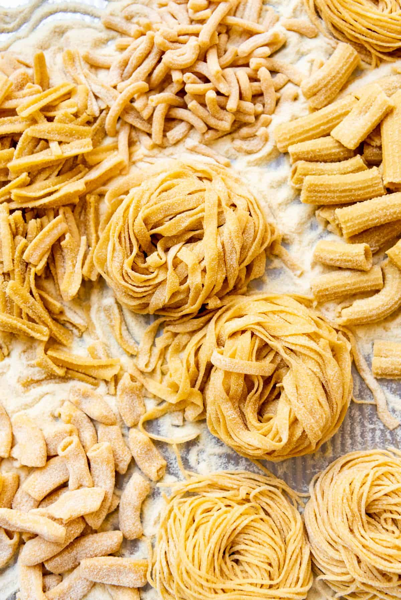

<!DOCTYPE html>
<html lang="en">
    <head>
        <meta charset="utf-8">
        <meta name="viewport" content="width=device-width, initial-scale=1.0">
    </head>
</html>
<body>
    <h1>Pasta</h1>
    
    <h2>Green Pesto with garlic</h2>
    <p>This recipe includes very few ingredients like basil, garlic, pines and olive oil.</p>
    <p>Its so simple yet so delicious!</p>
    <h2>Ingredients</h2>
    <ul>
        <li>Flour</li>
        <li>Eggs</li>
        <li>Oil</li>
        <li>Salt</li>
        <li>Water</li>
    </ul>
    <h2>Steps</h2>
    <ol>
        <li>Make the dough</li>
        <li>Turn the dough out and knead it for 10 minutes</li>
        <li>Let the dough rest</li>
        <li>Divide the dough into balls</li>
        <li>Use a pasta machine to roll and cut the dough into desired shapes</li>
    </ol>
</body>